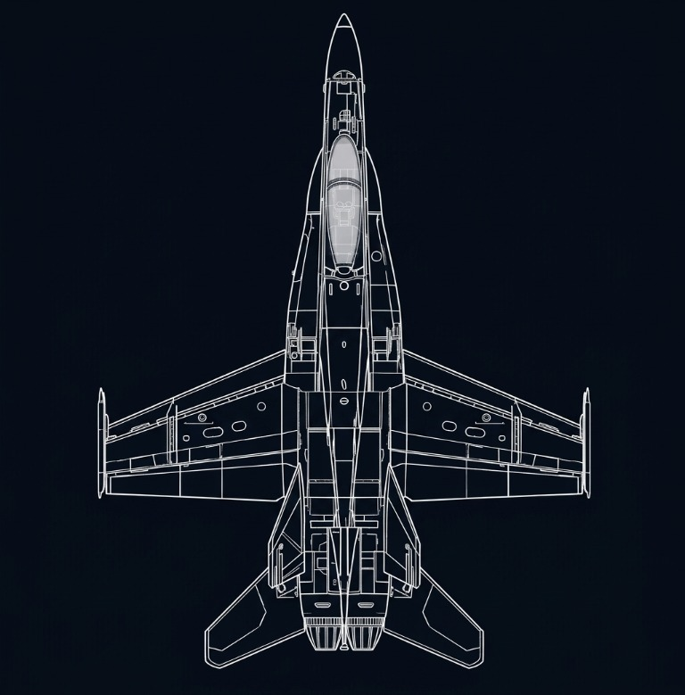

FIGHTER
Air defense and aerial combat, with agility and situational awareness at the center of the mission.
CARRIER-BASED MULTIROLE FIGHTER
Designed for the demands of carrier aviation, the Hornet brings fighter agility and strike capability together in a single airframe.
EXPLORE THE AIRFRAME↓
01 / THE AIRFRAME
The F/A-18C is a single-seat, twin-engine multirole fighter built to operate from aircraft carriers.
Its recognizable planform combines swept wings, leading-edge extensions, twin vertical stabilizers, and folding outer wing panels. These features support maneuverability and practical storage aboard ship.
02 / MISSION PROFILE
Air defense and aerial combat, with agility and situational awareness at the center of the mission.
Precision attack and close air support, configured to meet the objectives of each sortie.
Designed for demanding deck operations, with folding wings and robust landing gear.
03 / ARMAMENT
20 mm six-barrel rotary cannon, mounted internally in the nose.
AIM-9 Sidewinder, AIM-7 Sparrow, and AIM-120 AMRAAM on suitably upgraded aircraft.
Examples include AGM-65 Maverick, AGM-84 Harpoon, and AGM-88 HARM.
Mk 80-series bombs, Paveway laser-guided bombs, and JDAM on compatible upgrades.
Available weapons varied by aircraft block, software upgrades, and mission configuration; not every store could be carried together.
04 / AIRFRAME DATA
Representative published characteristics. Performance varies with configuration and conditions.